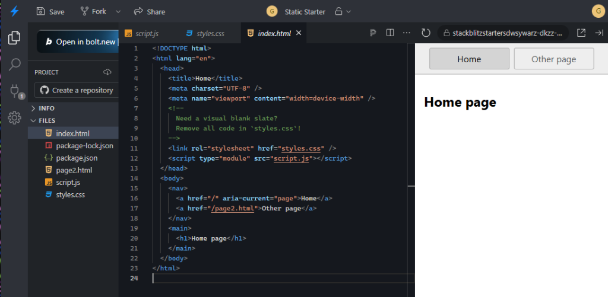
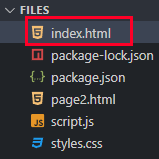

Tutorial: construção de um blog
Bem-vindo(a) ao tutorial onde você aprenderá a construir seu primeiro blog do zero! Aqui, você dará seus primeiros passos no mundo do desenvolvimento web, aprendendo HTML, CSS e JavaScript na prática.
Um blog responsivo com postagens, imagens estilizadas e um sistema de "curtidas" interativo. Prepare-se para ver seu código ganhar vida!
Conhecendo o StackBlitz
Antes de escrever qualquer código, precisamos de um editor. Neste tutorial, utilizaremos o StackBlitz — uma ferramenta gratuita que funciona diretamente no navegador, sem precisar instalar nada.
Como criar um projeto no StackBlitz


Para não perder suas atualizações, lembre-se sempre de salvar o projeto clicando no botão "Save" (no menu superior esquerdo) ou utilizando o atalho de teclado Ctrl + S.
A estrutura básica do HTML
Todo documento HTML segue uma estrutura padrão. Ela é como o esqueleto de uma página: define onde ficam as informações que o navegador exibe e as instruções que ficam ocultas.
O que é HTML?
HTML (HyperText Markup Language) é a linguagem que define o conteúdo e a estrutura de uma página web. Tudo que você vê em um site — textos, títulos, imagens — é criado com HTML.
No HTML, utilizamos tags para organizar o conteúdo. Uma tag é composta por um nome entre
sinais de menor e maior: <tag>. A maioria das tags possui abertura e
fechamento:
A estrutura completa
Abra o seu arquivo index.html no StackBlitz. Este é o ponto de partida do
nosso blog. Você pode fazer sobre qualquer assunto de seu interesse: filmes, séries, animes, comidas,
lugares, etc. O exemplo
abaixo é sobre filmes. Para começarmos, apague todo o conteudo do arquivo e cole o codigo a seguir:
<!DOCTYPE html> <html lang="pt-BR"> <head> <meta charset="UTF-8"> <meta name="viewport" content="width=device-width, initial-scale=1.0"> <title>Meu Blog de Filmes</title> </head> <body> <header> <h1>🎬 Meu Blog de Filmes</h1> <p>Dicas e recomendações para todos os gostos</p> </header> <main> <h2>Interestelar</h2> <p class="autor">Por: Maria Souza</p> <p>Uma viagem épica pelo espaço que desafia os limites da ciência e do amor.</p> </main> </body> </html>
A estrutura HTML é organizada de forma hierárquica — tags dentro de outras tags
<!DOCTYPE html> — informa ao navegador que é um documento HTML
moderno.
<head> — contém informações ocultas, como o título da aba e configurações.
<body> — tudo o que o usuário vê na página fica aqui.
<header> — define o cabeçalho visual da página.
<main> — delimita o conteúdo principal da página.
Tags de texto e formatação
O HTML oferece diversas tags para organizar e formatar textos. Cada uma tem uma função semântica: não apenas muda a aparência, mas também informa ao navegador o papel daquele conteúdo.
As tags de bloco ocupam uma linha inteira; as tags inline formatam apenas parte do texto
Atualize seu arquivo index.html
Dentro do <main>, enriqueça o conteúdo do filme adicionando ênfase ao título e ao
gênero:
<main> <h2>Interestelar</h2> <p class="autor">Por: <strong>Maria Souza</strong></p> <p> <em>Interestelar (2014)</em> — Uma viagem épica pelo espaço que desafia os limites da ciência e do amor. <br> Indicado para quem aprecia <strong>ficção científica</strong> profunda. </p> </main>
Use <strong> para indicar importância real do conteúdo (não
apenas para deixar destacado). Use <em> para indicar ênfase (não apenas
itálico
decorativo). O Google e os leitores de tela entendem essa diferença.
Estilizando com CSS
O CSS (Cascading Style Sheets) é a linguagem responsável pela aparência visual da página. Com ele, definimos cores, fontes, tamanhos e disposição dos elementos.
Como o CSS funciona
O CSS funciona através de regras. Cada regra é composta por um seletor (qual elemento estilizar) e um bloco de declarações (quais estilos aplicar):
Uma regra CSS: seletor define o quê estilizar; propriedade e valor definem como
Adicionando estilos ao nosso blog
Por boas práticas de programação, não devemos misturar código HTML e CSS no mesmo arquivo. Em vez disso,
vamos criar um arquivo separado chamado styles.css para guardar todos os nossos estilos.
Primeiro, dentro do <head> do seu arquivo index.html, adicione a tag
<link> abaixo para fazer a ligação entre o HTML e a nossa folha de estilos externa:
<head> <!-- ... outras tags meta ... --> <title>Meu Blog de Filmes</title> <link rel="stylesheet" href="styles.css"> </head>
Agora, crie um novo arquivo chamado styles.css na mesma pasta do seu projeto e adicione as
regras CSS abaixo nele (não use a tag <style> aqui, pois esse já é um arquivo CSS puro):
header { background-color: #1a2744; color: #ffffff; text-align: center; max-width: 800px; margin: 0 auto; padding: 16px; } main { background-color: #ffffff; color: #1a2744; text-align: center; max-width: 800px; margin: 0 auto; padding: 16px; }
A combinação de cores deve garantir boa legibilidade. A proporção mínima recomendada é de
4,5:1 entre texto e fundo. O azul-marinho #1a2744 com texto branco
#ffffff oferece excelente contraste.
Propriedades CSS essenciais
Referência rápida
background-color — cor de fundo do elementocolor — cor
do textotext-align
— alinhamento do texto (left, center, right)max-width —
largura máxima do elemento (ex: 800px)margin: 0 auto — centraliza o elemento
horizontalmentepadding —
espaçamento interno entre o conteúdo e a bordaBox model e imagens
Cada elemento HTML é tratado como uma "caixa" pelo navegador. Compreender esse modelo é fundamental para controlar espaçamentos e bordas. Também aprenderemos a inserir imagens de forma acessível.
O modelo de caixa (Box Model)
Todo elemento HTML possui quatro camadas ao seu redor. Da parte mais interna para a mais externa:
O box model: cada elemento é uma caixa com conteúdo, espaçamento interno, borda e espaçamento externo
Adicionando uma imagem ao blog
A tag <img> insere imagens na página. Ela não precisa de tag de fechamento e possui dois
atributos essenciais:
src— o caminho ou endereço da imagemalt— texto alternativo que descreve a imagem (essencial para acessibilidade)
Adicione o código abaixo dentro do <main>, antes do <h2>:
<main> <img src="https://upload.wikimedia.org/wikipedia/en/b/bc/Interstellar_film_poster.jpg" alt="Pôster do filme Interestelar: nave espacial sobre um planeta alienígena" > <h2>Interestelar</h2> <!-- ... restante do conteúdo ... --> </main>
Agora, no CSS, controle o tamanho da imagem e adicione bordas e padding ao header:
img { width: 100%; max-width: 600px; height: auto; border: 3px solid #e8a020; border-radius: 8px; } header { /* adicionar ao bloco existente: */ padding: 24px 16px; }
Por que usamos width: 100% e max-width: 600px?
- Responsividade: Com
width: 100%, a imagem torna-se flexível e diminui para caber em telas menores (como celulares), evitando que ela estoure a largura do dispositivo e crie barras de rolagem horizontais. - Controle em telas grandes: O
max-width: 600pxserve como um "teto". Ele impede que a imagem se estique demais em monitores de computador, o que a deixaria distorcida, pixelada ou ocupando espaço excessivo. - Proporções mantidas: Ao omitir uma altura fixa ou usar
height: auto, o navegador calcula a altura proporcional com base na largura atual, evitando que a imagem fique achatada ou esticada.
O atributo alt é utilizado por leitores de tela para descrever imagens a
pessoas com deficiência visual. Também é exibido quando a imagem não carrega. Sempre descreva o conteúdo
relevante da imagem.
Flexbox e classes CSS
O Flexbox é um sistema de layout que permite posicionar elementos lado a lado de forma flexível. As classes CSS permitem aplicar estilos específicos a elementos escolhidos, sem afetar todos os demais.
O problema sem Flexbox
Por padrão, elementos HTML como <div>, <p> e <img>
ficam empilhados verticalmente (um abaixo do outro), ocupando toda a largura disponível. Isso é chamado de
display: block.
O display: flex permite colocar a imagem e o texto lado a lado
Organizando o card com a tag article e Flexbox
Para estruturar nosso post de forma semântica, utilizaremos a tag <article> em vez de
uma simples <div>.
Por que usar a tag <article>?
- Significado Semântico: A tag
<article>indica ao navegador, motores de busca (como o Google) e leitores de tela que aquele bloco é uma unidade de conteúdo independente e autocontida, que faz sentido por si só (como uma postagem ou notícia). A tag<div>, por outro lado, é genérica e não tem significado estrutural. - Acessibilidade e SEO: Usar tags semânticas corretas ajuda na indexação do seu site pelo Google e melhora a navegação para pessoas com deficiência visual que utilizam softwares de leitura de tela.
No seu HTML, envolva o conteúdo e a imagem do card dentro de uma tag <article>,
colocando a imagem no final (depois do texto do filme):
<main> <article> <h2>Interestelar</h2> <p class="autor">Por: <strong>Maria Souza</strong></p> <p>Uma viagem épica pelo espaço...</p> <img src="https://upload.wikimedia.org/wikipedia/en/b/bc/Interstellar_film_poster.jpg" alt="Pôster do filme Interestelar" > </article> </main>
Agora, no CSS, aplique display: flex ao <article> (com direção em coluna
para empilhar os elementos verticalmente e centralizá-los, exatamente como no nosso protótipo) e estilize a
classe .autor:
article { background-color: #ffffff; color: #1a2744; max-width: 800px; margin: 0 auto; padding: 24px; display: flex; flex-direction: column; /* ← posiciona os itens em coluna */ align-items: center; /* ← centraliza horizontalmente */ text-align: center; /* ← centraliza os textos */ gap: 16px; /* ← espaço entre os elementos */ border-radius: 8px; box-shadow: 0 4px 12px rgba(0, 0, 0, 0.08); } .autor { /* ← seletor de classe com ponto */ font-weight: bold; color: #888888; font-size: 13px; }
No HTML, atribuímos uma classe com class="nome-da-classe". No CSS,
referenciamos essa classe com um ponto na frente: .nome-da-classe { ... }. O nome deve ser
uma única palavra (use hífens para separar), sem espaços e sem caracteres especiais.
Contador de likes com JavaScript
O JavaScript é a linguagem que torna as páginas interativas. Com ele, podemos responder a ações do usuário — como um clique — e atualizar o conteúdo da página em tempo real.
HTML = esqueleto · CSS = aparência · JavaScript = comportamento
Passo 1: Adicionar o botão no HTML
Dentro da tag <article> que criamos, adicione um botão com um emoji de coração
e um <span> para exibir o contador (sugerimos colocá-lo antes da imagem):
<article> <h2>Interestelar</h2> <p class="autor">Por: <strong>Maria Souza</strong></p> <p>Uma viagem épica pelo espaço...</p> <button>❤️ <span>0</span></button> <img src="..." alt="..."> </article>
Passo 2: Estilizar o botão no CSS
Abra o seu arquivo styles.css e adicione a regra abaixo para deixar o botão com cantos
arredondados, fundo branco e espaçamento interno:
button { padding: 8px 16px; border: 1px solid #ddd; border-radius: 20px; background: #ffffff; cursor: pointer; font-size: 14px; margin-top: 12px; }
Passo 3: Criar e vincular o arquivo JavaScript
Assim como fizemos com o CSS, a melhor prática é manter nosso código JavaScript em um arquivo separado
chamado script.js. Isso deixa nosso HTML limpo e focado na estrutura.
Primeiro, no final do seu arquivo index.html, logo antes da tag de fechamento
</body>, adicione a tag <script> vinculando o arquivo externo:
<script src="script.js"></script> </body>
Agora, crie o arquivo script.js na mesma pasta do seu projeto e adicione o código abaixo para
fazer o botão funcionar:
// 1. Seleciona o botão no documento const botao = document.querySelector("button"); // 2. Escuta o evento de clique botao.addEventListener("click", botaoClicado); // 3. Define o que acontece ao clicar function botaoClicado() { let contador = botao.querySelector("span"); contador.textContent++; // incrementa o número em 1 }
Fluxo completo: o clique dispara o evento, que executa a função, que atualiza o número na tela
Pressione F12 no navegador para abrir as ferramentas de desenvolvedor.
Na aba Console, você pode adicionar console.log("teste") dentro da função
para verificar se ela está sendo executada corretamente.
Estado dos arquivos do projeto neste módulo
Neste ponto, o seu projeto deve estar organizado em três arquivos separados na mesma pasta:
<!DOCTYPE html> <html lang="pt-BR"> <head> <meta charset="UTF-8"> <meta name="viewport" content="width=device-width, initial-scale=1.0"> <title>Meu Blog de Filmes</title> <link rel="stylesheet" href="styles.css"> </head> <body> <header> <h1>🎬 Meu Blog de Filmes</h1> <p>Dicas e recomendações para todos os gostos</p> </header> <main> <article> <h2>Interestelar</h2> <p class="autor">Por: <strong>Maria Souza</strong></p> <p>Uma viagem épica pelo espaço...</p> <button>❤️ <span>0</span></button> <img src="https://upload.wikimedia.org/wikipedia/en/b/bc/Interstellar_film_poster.jpg" alt="Pôster de Interestelar"> </article> </main> <script src="script.js"></script> </body> </html>
header { background-color: #1a2744; color: #ffffff; text-align: center; max-width: 800px; margin: 0 auto; padding: 24px 16px; } main { max-width: 800px; margin: 0 auto; padding: 24px 16px; } article { background-color: #ffffff; color: #1a2744; padding: 24px; display: flex; flex-direction: column; align-items: center; text-align: center; gap: 16px; border-radius: 8px; box-shadow: 0 4px 12px rgba(0, 0, 0, 0.08); } img { width: 100%; max-width: 600px; border: 3px solid #e8a020; border-radius: 8px; } .autor { font-weight: bold; color: #888888; font-size: 13px; } button { padding: 8px 16px; border: 1px solid #ddd; border-radius: 20px; background: #ffffff; cursor: pointer; font-size: 14px; margin-top: 12px; }
const botao = document.querySelector("button"); botao.addEventListener("click", botaoClicado); function botaoClicado() { let contador = botao.querySelector("span"); contador.textContent++; }
Você organizou o seu projeto dividindo o código em HTML, CSS e JavaScript. Agora que cada parte está no seu devido arquivo, estamos prontos para trabalhar com múltiplos elementos no próximo módulo!
Você criou uma página web com HTML estruturado, CSS personalizado e interatividade em
JavaScript. Para continuar evoluindo, experimente: adicionar outros filmes com novos
<div>, criar um arquivo style.css separado, ou personalizar as cores e
fontes ao seu gosto.
Você aprendeu neste tutorial
head, body, header e mainh1,
h2, p, strong e emaltdisplay: flex e classes CSS
para organizar o layoutquerySelector, addEventListener e atualização de conteúdoEventos em múltiplos elementos
Agora que temos um botão interativo, vamos aprender a trabalhar com vários botões na mesma página utilizando o JavaScript. Veremos como selecionar todos eles de uma vez e associar um evento a cada um usando loops.
O problema com querySelector
O método document.querySelector() seleciona apenas o primeiro elemento que
corresponde ao seletor. Se nossa página tiver vários botões e tentarmos usá-lo, o JavaScript só vai
controlar o primeiro botão de todos, ignorando os outros.
Para selecionar todos os botões de uma vez, precisamos usar o document.querySelectorAll(). Ele
nos retorna uma lista contendo todos os elementos que correspondem ao seletor.
Passo 1: Adicionar um segundo botão no HTML
No seu arquivo index.html, adicione um segundo botão de reação dentro do
<article> do filme (por exemplo, um joinha 👍):
<article> <h2>Interestelar</h2> <p class="autor">Por: <strong>Maria Souza</strong></p> <p>Uma viagem épica pelo espaço...</p> <button>❤️ <span>0</span></button> <button>👍 <span>0</span></button> </article>
Passo 2: Usar forEach para percorrer os botões
Como o querySelectorAll nos dá uma lista de botões, precisamos usar o método
forEach. O forEach funciona como um "carteiro" que visita cada botão da lista um
por um e executa uma tarefa. Neste caso, ele atribui o evento de clique a todos os botões, sem que você
precise escrever um por um.
// 1. Seleciona todos os botões da página const botoes = document.querySelectorAll("article button"); // 2. Percorre a lista de botões usando forEach botoes.forEach(function(botao) { // Adiciona o evento de escuta para cada botão individual botao.addEventListener("click", botaoClicado); // 3. Função que será executada ao clicar no botão específico function botaoClicado() { let contador = botao.querySelector("span"); contador.textContent++; // Incrementa apenas o span deste botão } });
Ao declarar a função botaoClicado dentro do forEach, ela ganha
acesso direto à variável botao correspondente daquela iteração (um conceito chamado
closure ou escopo fechado). Isso garante que o contador correto seja incrementado!
Lógica e limite de curtidas
Para finalizar nosso projeto, vamos adicionar um segundo post ao blog, ajustando a
estrutura do layout com a tag semântica <article>. Também criaremos uma lógica para
limitar as curtidas a apenas uma por post, usando booleanos e condicionais.
Criando o segundo post no blog
Um blog real possui vários posts. Como já utilizamos a tag semântica <article> para
organizar nosso card de filme, adicionar outro é muito fácil! Basta duplicar todo o bloco do
<article> dentro do nosso <main>, alterando os dados para um novo
filme (ex: Avatar).
Para que os posts não fiquem colados uns nos outros, vamos adicionar um espaço entre eles atualizando a
regra do nosso article no CSS:
article { /* ... propriedades existentes ... */ margin-bottom: 32px; /* ← Espaço entre os posts */ }
Controlando as interações com Booleanos
Em redes sociais reais, você só pode curtir uma publicação uma vez. Se clicar novamente, a curtida é
desfeita ou ignorada. Para implementar isso, vamos usar variáveis booleanas (que assumem
apenas os valores true ou false) e a condicional if.
Criaremos uma variável de controle chamada curtiu, iniciada como false. Quando o
usuário clica, verificamos se curtiu === false. Se for verdade, incrementamos a curtida e
mudamos a variável para true. Cliques seguintes serão ignorados porque o valor agora é
true!
A variável booleana de controle impede curtidas repetidas no mesmo elemento.
Código completo final com múltiplos posts e limite de likes
Abaixo está o código final do seu blog de filmes, totalmente finalizado com múltiplos posts e a lógica de curtidas limite:
<!DOCTYPE html> <html lang="pt-BR"> <head> <meta charset="UTF-8"> <meta name="viewport" content="width=device-width, initial-scale=1.0"> <title>Meu Blog de Filmes</title> <link rel="stylesheet" href="styles.css"> </head> <body> <header> <h1>🎬 Meu Blog de Filmes</h1> <p>Dicas e recomendações para todos os gostos</p> </header> <main> <!-- Post 1 --> <article> <h2>Interestelar</h2> <p class="autor">Por: <strong>Maria Souza</strong></p> <p>Uma viagem épica pelo espaço que desafia os limites da ciência.</p> <button>❤️ <span>0</span></button> <button>👍 <span>0</span></button> <img src="https://upload.wikimedia.org/wikipedia/en/b/bc/Interstellar_film_poster.jpg" alt="Pôster de Interestelar"> </article> <!-- Post 2 --> <article> <h2>Avatar</h2> <p class="autor">Por: <strong>Marcelo Paludetto</strong></p> <p>Uma jornada espetacular no mundo de Pandora, descobrindo novas culturas.</p> <button>❤️ <span>0</span></button> <button>👍 <span>0</span></button> <img src="https://upload.wikimedia.org/wikipedia/en/d/d6/Avatar2009poster.jpg" alt="Pôster de Avatar"> </article> </main> <script src="script.js"></script> </body> </html>
header { background-color: #1a2744; color: #ffffff; text-align: center; max-width: 800px; margin: 0 auto; padding: 24px 16px; } main { max-width: 800px; margin: 0 auto; padding: 24px 16px; } article { background-color: #ffffff; color: #1a2744; padding: 24px; display: flex; flex-direction: column; align-items: center; text-align: center; gap: 16px; border-radius: 8px; box-shadow: 0 4px 12px rgba(0, 0, 0, 0.08); margin-bottom: 32px; } img { width: 100%; max-width: 600px; border: 3px solid #e8a020; border-radius: 8px; } .autor { font-weight: bold; color: #888888; font-size: 13px; } button { padding: 8px 16px; border: 1px solid #ddd; border-radius: 20px; background: #ffffff; cursor: pointer; font-size: 14px; margin-top: 12px; margin-right: 8px; }
const botoes = document.querySelectorAll("article button"); botoes.forEach(function(botao) { // Cada botão da lista possui sua própria variável de controle (booleana) let curtiu = false; botao.addEventListener("click", botaoClicado); function botaoClicado() { let contador = botao.querySelector("span"); // Condicional que verifica se o usuário ainda não curtiu if (curtiu === false) { contador.textContent++; // Incrementa o contador do botão curtiu = true; // Marca como curtido } } });
Você estruturou múltiplos posts semanticamente com a tag <article>,
aplicou o modelo do Flexbox individualmente a cada um deles e programou uma lógica interativa complexa em
JavaScript para limitar curtidas. Você aprendeu a usar listas, iterações e booleanos!
Guia da 1ª entrega parcial - 2,0 pontos
Esta seção contém todas as instruções e requisitos para a entrega da primeira parte do projeto. A entrega deve ser feita fornecendo o link do seu projeto finalizado no StackBlitz, como no exemplo:
📁 Estrutura do Projeto
O projeto deve conter obrigatoriamente três arquivos base:
index.html- A estrutura principal da página.styles.css(oustyle.css) - A estilização visual.script.js- A interatividade.
O seu projeto contém alguns arquivos de configuração (como package.json). Não os apague nem os altere! Eles são responsáveis por rodar a "máquina virtual" do StackBlitz que permite que você escreva o código direto no navegador. Se removê-los, o projeto pode quebrar.
📝 Requisitos do HTML
Seu arquivo HTML deve ter o esqueleto básico (<head>, <body>) e as
tags semânticas estruturadas corretamente. O body deve conter um <header> com um
<h1> contendo o nome do site, e um <main> para o conteúdo principal.
Dentro do <main>, você deve criar 2 (dois) articles (um para cada
postagem). Cada article precisa ter um <h2>, parágrafos (<p>) para o
texto, uma imagem com link da internet (e o atributo alt preenchido), e dois botões (Like e
Coração).
Dica: Você pode usar a tag <br> para separar visualmente os articles,
caso precise.
<body> <header> <h1>Nome do Site</h1> </header> <main> <article> <h2>Postagem 1</h2> <p>Texto da postagem...</p> <img src="link.jpg" alt="Descrição detalhada"> <button>❤️ <span>0</span></button> <button>👍 <span>0</span></button> </article> <br> <!-- Opcional para separar --> <article> <!-- Segunda postagem aqui --> </article> </main> </body>
🎨 Requisitos do CSS
A página deve ter uma cor de fundo geral e os articles devem ter outra cor de fundo diferente para se
destacarem. Utilize padding no header, main e articles para o conteúdo respirar e não ficar
colado nas bordas.
O <main> deve estar estruturado usando Flexbox em formato de coluna para garantir que os
articles fiquem verticais.
Além disso, aplique os seguintes estilos visuais:
- Articles com bordas arredondadas (
border-radius). - Imagem dentro do article com preenchimento de 100%, mas tamanho máximo limitado a 600px.
- Articles ocupando 100% da tela, com tamanho máximo limitado a 800px.
main { display: flex; flex-direction: column; padding: 20px; } article { background-color: #f0f0f0; border-radius: 10px; padding: 20px; width: 100%; max-width: 800px; } article img { width: 100%; max-width: 600px; }
⚙️ Requisitos do JavaScript
O arquivo script.js deve conter a lógica de funcionamento dos botões de Like e Coração. Ao
clicar nos botões, os contadores (números) devem aumentar adequadamente em resposta à interação do usuário.
// Lógica para curtir os posts const botoes = document.querySelectorAll("article button"); botoes.forEach(function(botao) { let curtiu = false; botao.addEventListener("click", botaoClicado); function botaoClicado() { let contador = botao.querySelector("span"); if (curtiu === false) { contador.textContent++; curtiu = true; } } });
Como publicar no GitHub Pages (Extra)
Para compartilhar seu projeto com o mundo, você pode hospedá-lo online. O GitHub Pages permite colocar sua página no ar gratuitamente em minutos, direto do seu repositório de código. Esse passo é opcional, mas altamente recomendado!
Passo a Passo da Publicação
.zip. Em seguida, extraia (descompacte) esse arquivo em uma pasta no seu computador.
index.html, styles.css, script.js, etc.). Role a página para
baixo e clique no botão verde Commit changes.None para main (ou master) e clique em Save. Em alguns
minutos, seu site estará online no link indicado!
Se quiser pular o processo de baixar e subir arquivos manualmente, o StackBlitz possui um botão Connect Repository no canto superior esquerdo. Com ele, você faz login com sua conta do GitHub e o StackBlitz cria o repositório e envia os arquivos automaticamente por você. Depois, basta ir no GitHub e ativar o Pages no Passo 4!
Pronto! Com o link do GitHub Pages, qualquer pessoa no mundo pode acessar o seu blog. Envie para seus amigos e professores!